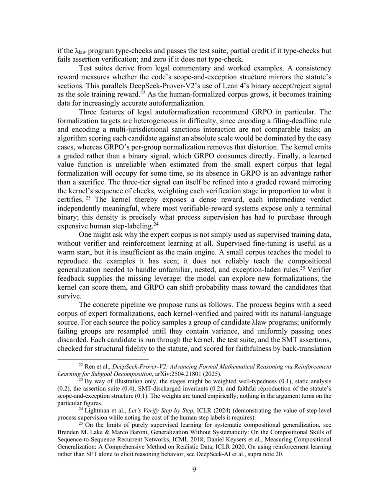
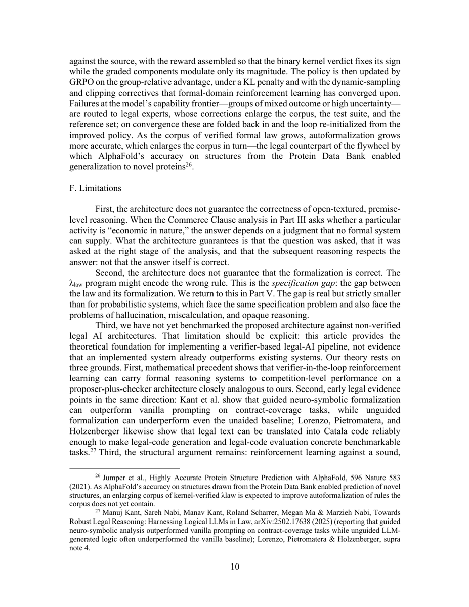
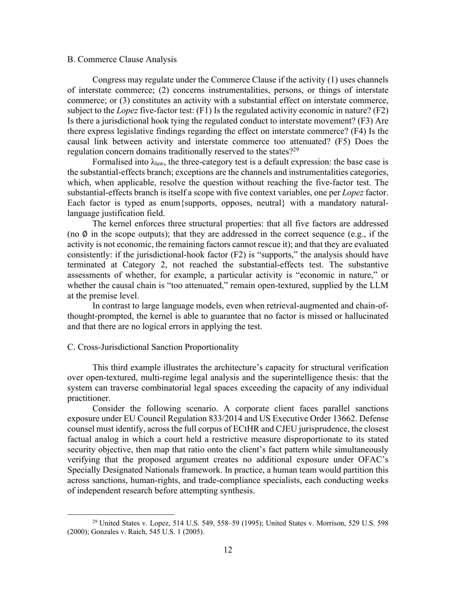

⚠️ Source = PDF uniquement. Pas de source LaTeX sur arXiv (
src/ne contient queeprint.pdf). Extractionpdftotext -layout(15 pages PDF, 739 lignes / 7 371 mots), lue intégralement. Pas de LaTeX ⇒ pas de numérotation d'équations ni d'annexes : le papier n'a ni annexe, ni figure, ni tableau. Les références sont des[§II.E],[note 23],[p. 12].⚠️ Avertissement de calibration. Ce papier n'a aucune composante empirique : pas d'implémentation, pas de run, pas de chiffre produit par les auteurs. Son
evidence: 0/3n'est comparable qu'à d'autres papiers théoriques, jamais aux papiers ENV empiriques du corpus. Sa priorité A vient de sa position unique dans la revue (seul papier proposant un vérifieur juridique formellement exact comme reward), pas de sa solidité.
TL;DR. Position paper de philosophie/droit qui propose (sans l'implémenter) une architecture « LLM proposes, verifier disposes » pour le droit : un LLM autoformalise le texte juridique en λlaw (extension de Catala avec modalités déontiques + opérateurs temporels), un noyau de vérification (type-checking + analyse statique + Z3) accepte/rejette, et le verdict du noyau sert de reward GRPO pour améliorer l'autoformalisation.
Claim principal, formulé précisément. Deux garanties de niveaux différents [abstract ; §II.A ; §V] : 1. pour les bound determinations (calcul de délais, calcul d'impôt, règles d'éligibilité, renvois statutaires) : provable correctness — le résultat suit déductivement des règles formalisées ; 2. pour l'open-textured analysis (tests de balance constitutionnels, proportionnalité, standards de raisonnabilité) : structural guarantees — chaque étape requise de l'argument est traitée, au bon stade, non omise, et les liens déductifs entre étapes sont valides.
Et un claim dérivé, celui qui intéresse la revue : un vérifieur déterministe externe « closes the traditional reinforcement-learning loop gap in law » [abstract].
⚠️ Gain chiffré : aucun. Le papier ne revendique ni score, ni écart, ni baseline. Il l'admet explicitement : « we have not yet benchmarked the proposed architecture against non-verified legal AI architectures… this article provides the theoretical foundation for implementing a verifier-based legal-AI pipeline, not evidence that an implemented system already outperforms existing systems » [§II.F, p. 10].
⚠️ Le papier s'annonce comme le second d'une paire : « Our companion article argued… » [p. 2, et 3 autres occurrences]. Ce companion n'est jamais cité — pas de note de bas de page, pas d'ID arXiv, pas de titre. Les trois thèses qu'il est censé établir (les systèmes actuels ne sont pas des raisonneurs autonomes ; les échecs empiriques tracent des limites architecturales des transformers ; le droit exige des garanties prouvables) sont donc invérifiables depuis ce papier, alors qu'elles servent de prémisse à tout l'argument.
⚠️ Section largement vide par construction : il n'y a pas de dataset. Ce qui suit est ce que les auteurs proposent de construire, pas ce qu'ils ont construit.
⚠️ Il n'y a pas de harness implémenté. Voici la spécification telle qu'écrite.
Architecture en 3 couches [§II] :
Layer 1 — Autoformalization [§II.B, p. 6–7]
- Traduit statuts, règlements, précédents et règles en λlaw, « a typed formal language ».
- λlaw étend Catala (Merigoux, Chataing & Protzenko, ICFP 2021) dans deux directions :
1. constructeurs de types déontiques O(τ), P(τ), F(τ) — obligation, permission, prohibition. Motivation : questions transjuridictionnelles (comparer deux régimes de sanctions, l'un prohibant et l'autre permettant une transaction). Les obligations dérivées servent d'entrées pour un calcul normatif ultérieur, via une reusable output operation adaptée des input/output logics (Makinson & van der Torre, J. Phil. Logic 2000) : « de a déclenche l'obligation x, et x avec a déclenche y, il suit que y est obligatoire » ;
2. opérateurs temporels pour l'arithmétique de dates avec sémantique de rounding explicite, d'après Monat, Fromherz & Merigoux (ESOP 2024).
- Le cœur hérité de Catala est la default expression ⟨e₁, …, eₙ | j :− c⟩ [§II.B, p. 6], sémantique recopiée du papier :
- si exactement une exception produit une valeur → retourner cette valeur ;
- si deux ou plus produisent une valeur → conflict error ⊥ ;
- si aucune ne produit de valeur et que la justification j est vraie → retourner le conséquent c ;
- si j est fausse → empty error ∅.
- Lecture juridique : une valeur = conclusion déterminée ; un conflit ⊥ = ambiguïté du statut exigeant une résolution open-textured ; un vide ∅ = lacune du schéma statutaire.
- ⚠️ C'est le point le plus réutilisable du papier : le type d'erreur classe automatiquement ce qui est décidable et ce qui ne l'est pas. Le signal « ce cas est juridiquement contesté » tombe du calcul lui-même.
Layer 2 — Verification kernel [§II.C, p. 7–8] - « a small, trusted computing base that is independent of the language models employed in Layer 1 ». Trois opérations : 1. type-checking de λlaw — « ensuring no category mistakes are encoded » ; exemple donné : éviter de « citing a remedies case for a jurisdictional proposition » [§II, p. 3] ; 2. analyses statiques — « that every input produces a defined output », « that the program is conflict-free and without temporal ambiguities » ; 3. vérification d'assertions : la contrainte est niée et soumise à un solveur SMT (Z3, de Moura & Bjørner TACAS 2008). Si la négation est insatisfiable, la contrainte tient pour toutes les entrées ; sinon le solveur rend un contre-exemple. Exemple recopié : l'invariant « The amount of tax that is owed is greater than or equal to zero » se vérifie en demandant au solveur s'il existe une entrée pour laquelle l'impôt calculé est négatif. - Trois raisons de confiance énoncées [§II.C, p. 8] : (a) le noyau est petit — faible surface d'attaque, par contraste avec « a language model with hundreds of billions of parameters » ; (b) il est LLM-independent — le LM ne peut influencer la vérification, le noyau n'opère que sur le programme formel ; (c) il repose sur la soundness des procédures de Z3 pour QF-LIA et QF-LRA — si le solveur rapporte UNSAT, la formule est réellement insatisfiable. Analogie explicite avec le kernel de Lean 4.
Layer 3 — Explanation generation [§II.D, p. 8]
- Chaque conclusion du noyau est accompagnée d'un proof trace : une séquence de triplets ⟨explication en langue naturelle, disposition statutaire ou précédent, valeur intermédiaire vérifiée⟩.
- Le LLM génère ensuite l'explication NL du proof trace. Ordre critique : « Since this happens after the kernel has concluded its work, errors in explanation cannot affect the verified result. »
- Variante pour l'open-textured : le composant « règle » cite un précédent et sa ratio decidendi, le composant « valeur » enregistre le mapping analogique entre le pattern factuel du précédent et l'espèce. Garantie alors « weaker but still valuable » : que le cas cité existe, que la ratio citée est fidèle, et que l'analogie structurelle est bien formée. Les auteurs qualifient l'extension du noyau au raisonnement analogique défaisable d'« important direction for future work » — c'est-à-dire non fait.
Le reste de la grille harness :
- Observation : non précisé. Rien sur ce que voit le modèle à chaque tour, ni sur le format de prompt.
- Espace d'actions / outils : aucune liste d'outils, aucune signature. Le modèle « émet un programme λlaw » ; il n'y a pas d'API d'outils spécifiée.
- Single-turn / multi-turn : ambigu. Le texte évoque un retour structuré vers le LM : « If it fails, the error is reported to the language model as structured feedback for a second attempt » [§II, p. 3] — donc au minimum 2 tours au déploiement. Horizon typique et maximal : non précisés. Pour la boucle RL, rien n'indique que le feedback du noyau soit réinjecté dans le contexte (contrairement au déploiement) ; le pipeline décrit est une boucle de sampling de groupe, donc plutôt single-turn.
- Contexte long : non précisé (ni troncature, ni résumé, ni mémoire). ⚠️ Omission lourde pour un domaine où les corpus (« the full corpus of ECtHR and CJEU jurisprudence » [§III.C, p. 12]) sont énormes.
- Exécution : le noyau + Z3. Pas de sandbox, conteneur ou simulateur décrits. Déterminisme : c'est la propriété revendiquée centrale du noyau. Reset, timeouts : non précisés — ⚠️ alors que les timeouts SMT sont le problème pratique n°1 d'un tel noyau (Z3 peut ne pas terminer ; le papier ne mentionne ni budget, ni que faire d'un unknown).
- Gestion des erreurs / sorties mal formées : couverte par la grille de reward — zéro si le programme ne type-check pas [§II.E, p. 8–9]. Rien sur le parsing des sorties du modèle en amont du type-checker.
- Exemple de trajectoire : aucun. ⚠️ Le papier ne contient pas une seule ligne de code λlaw, pas un seul programme, pas une sortie de noyau, pas un proof trace concret. Les « exemples » de la Partie III sont des descriptions en prose de ce à quoi ressemblerait la formalisation (voir §7 et §8 ci-dessous).
C'est la section qui justifie la lecture de ce papier. À lire en gardant présent que le vérifieur n'existe pas : ce qui suit est une spécification.
Type. Hybride exécution/preuve formelle, en cascade : type-checking → analyse statique → test suite → assertions déchargées par SMT → fidélité structurelle → faithfulness par back-translation [§II.E, p. 9–10]. Pas de LLM-as-judge dans le noyau (par construction : « LLM-independent » [§II.C]). ⚠️ Mais la back-translation faithfulness du pipeline [§II.E, p. 10] est nécessairement une comparaison sémantique NL↔NL, donc probablement un LLM ou un modèle d'équivalence — les auteurs ne disent pas comment elle est calculée. C'est un trou : le seul composant du reward qui touche à la question « le programme encode-t-il la bonne règle ? » est celui dont la mécanique n'est pas spécifiée.
Granularité.
- Trois tiers de base [§II.E, p. 8–9], recopiés : « full marks if the λlaw program type-checks and passes the test suite ; partial credit if it type-checks but fails assertion verification ; and zero if it does not type-check. »
- Un consistency reward : « measures whether the code's scope-and-exception structure mirrors the statute's sections » [§II.E, p. 9].
- Raffinement gradué proposé, avec des poids donnés explicitement à titre d'illustration [note 23, p. 9] — je recopie la note intégralement car c'est le seul « hyperparamètre » du papier : « By way of illustration only, the stages might be weighted well-typedness (0.1), static analysis (0.2), the assertion suite (0.4), SMT-discharged invariants (0.2), and faithful reproduction of the statute's scope-and-exception structure (0.1). The weights are tuned empirically; nothing in the argument turns on the particular figures. »
⚠️ À ne jamais citer comme des hyperparamètres mesurés. Les auteurs se démarquent eux-mêmes.
- Composition du reward final [§II.E, p. 10] : « the binary kernel verdict fixes its sign while the graded components modulate only its magnitude ». ⚠️ Formulation intéressante et rare : le verdict formel est lexicographiquement dominant, les composantes molles ne peuvent jamais retourner le signe. C'est une garantie anti-hacking par construction du reward — la partie « molle » ne peut pas compenser un échec formel. Aucune formule explicite n'est donnée (pas de r = ...).
- Outcome vs process : les auteurs revendiquent un reward dense et process-like obtenu gratuitement : « The kernel thereby exposes a dense reward, each intermediate verdict independently meaningful, where most verifiable-reward systems expose only a terminal binary ; this density is precisely what process supervision has had to purchase through expensive human step-labeling » [§II.E, p. 9, citant Lightman et al. ICLR 2024]. ⚠️ C'est l'argument le plus fort du papier pour le juridique : la cascade de vérification produit un PRM sans annotation humaine de pas.
Termes additionnels. Pas de pénalité de longueur, pas de bonus de format au-delà du type-checking. Non précisés.
Fiabilité du vérifieur. ⚠️ Aucune mesure. Zéro. Pas de précision, pas d'accord inter-annotateur, pas de taux de faux positifs/négatifs — le noyau n'est pas implémenté. La fiabilité est argumentée, pas mesurée, par les trois raisons du §II.C (petitesse, indépendance du LLM, soundness de Z3). ⚠️ Notez la portée exacte de l'argument de soundness : il porte sur Z3 pour QF-LIA et QF-LRA ; il ne dit rien de la correction du type-checker λlaw lui-même, ni des analyses statiques, ni de la traduction des contraintes juridiques en formules SMT — ces trois maillons sont du code à écrire, non vérifié, et le papier les traite comme acquis.
Si juge LLM. Pas de juge LLM dans le noyau. Aucun prompt, aucune rubrique n'est recopié dans le papier — il n'y a pas d'annexe.
Robustesse / attaque. Le noyau n'a pas été attaqué (il n'existe pas). L'argument est purement structurel [§II.F, p. 11] : « reinforcement learning against a sound, deterministic verifier cannot reward an output that the verifier cannot certify. The reward is therefore non-gameable in the relevant sense. The remaining empirical question is whether the generator can be driven toward the region the verifier accepts. » ⚠️ « In the relevant sense » fait tout le travail, et les auteurs ne déballent pas la restriction. Voir §5 : le reward est ingameable sur ce qu'il certifie, mais rien n'empêche la policy de déplacer le périmètre de ce qui est certifié.
⚠️ Rien n'a été entraîné. Tout ce qui suit est proposé. C'est une section courte parce que le papier est court sur ce point — et cette pauvreté est elle-même l'information.
Algorithme. GRPO, décrit correctement et attribué à DeepSeek-R1 / DeepSeekMath [§II.E, p. 8, notes 20–21] : « For each prompt, GRPO samples a group of candidate outputs from the current policy, computes rewards for each candidate, and estimates the advantage of each candidate as its z-score within the group. This group-based comparison replaces the learned value function, reducing memory requirements by approximately half and simplifying the training pipeline. »
Trois arguments a priori pour GRPO en autoformalisation juridique [§II.E, p. 9] — c'est la seule contribution « ALGO » du papier, et elle est argumentative : 1. hétérogénéité de difficulté : encoder une règle de délai de dépôt et encoder une interaction de sanctions multi-juridictionnelles ne sont pas comparables ; un algorithme notant chaque candidat sur une échelle absolue serait dominé par les cas faciles, alors que la normalisation par groupe de GRPO supprime cette distorsion ; 2. signal gradué : le noyau émet un signal gradué plutôt que binaire, « which GRPO consumes directly » ; 3. petit corpus : « a learned value function is unreliable when estimated from the small expert corpus that legal formalization will occupy for some time, so its absence in GRPO is an advantage rather than a sacrifice ». ⚠️ Argument 1 et 3 sont, à mon sens, les deux raisons les plus solides du papier et elles se transposent telles quelles au juridique non formel. Argument 2 est faible : PPO et RLOO consomment aussi bien un reward gradué.
Ce qui diffère de GRPO standard. Deux éléments seulement [§II.E, p. 9–10] : - le group filtering asymétrique (resample les groupes tout-échec, jette les groupes tout-succès) ; - la composition sign/magnitude du reward (verdict binaire du noyau = signe ; composantes graduées = magnitude).
Hyperparamètres. ⚠️ Tous non précisés, sans exception : - coefficient KL : « under a KL penalty » [§II.E, p. 10] — coefficient non précisé, politique de référence non précisée ; - taille de groupe : non précisée ; - calcul/normalisation de l'advantage : z-score intra-groupe [§II.E, p. 8] — pas d'autre détail ; - clipping : « the dynamic-sampling and clipping correctives that formal-domain reinforcement learning has converged upon » [§II.E, p. 10] — ⚠️ formulation en creux ; aucune référence n'est donnée à ce point précis (pas de citation DAPO/Dr.GRPO), aucune valeur ; - on/off-policy : non précisé ; - longueur max de génération : non précisée ; - batch, LR, nombre de steps, température : non précisés ; - modèle de base : non précisé.
Stabilité. Non précisée. Aucune instabilité rencontrée (rien n'a tourné), aucune astuce rapportée, rien d'essayé puis abandonné.
Compute. Non précisé. Zéro GPU/TPU-heure. Le papier ne contient aucune estimation de coût d'entraînement.
Dynamique. Non précisée. Aucune courbe de reward, de longueur, d'entropie — le papier n'a aucune figure.
Le flywheel revendiqué [§II.E, p. 10 ; §II.F, p. 11] : « As the corpus of verified formal law grows, autoformalization grows more accurate, which enlarges the corpus in turn—the legal counterpart of the flywheel by which AlphaFold's accuracy on structures from the Protein Data Bank enabled generalization to novel proteins » [note 26, citant Jumper et al., Nature 2021]. ⚠️ Analogie non étayée. La PDB est un corpus de ~200k structures produites par une communauté expérimentale sur 50 ans avec un critère de vérité physique ; il n'existe aucun analogue juridique, et le papier ne dit pas comment on amorcerait le sien. C'est l'endroit où l'argument est le plus faible et le plus décisif à la fois.
Ce que le papier reconnaît lui-même (trois limitations explicites, §II.F p. 10–11) :
| # | Limitation reconnue | Formulation du papier | Correction proposée |
|---|---|---|---|
| L1 | Pas de garantie sur le raisonnement open-textured au niveau des prémisses | Quand l'analyse Commerce Clause demande si une activité est « economic in nature », « the answer depends on a judgment that no formal system can supply. What the architecture guarantees is that the question was asked, that it was asked at the right stage, and that the subsequent reasoning respects the answer: not that the answer itself is correct » | Aucune — assumée. L'architecture est censée « expose those moments rather than absorb them » [§V, p. 15] |
| L2 | Specification gap : le programme λlaw peut encoder la mauvaise règle | « If the λlaw program encodes the wrong rule, the kernel will faithfully verify a wrong conclusion. The guarantee is only as good as the formalization » [§IV, p. 14] | Trois mécanismes de réduction (pas d'élimination) : (a) si la formalisation contredit la doctrine sur un worked example, le test échoue ; (b) génération automatique de tests par concolic execution — « hundreds of thousands of inputs exploring both branches of every default » [CUTECat, ESOP 2025] ; (c) literate programming : le code λlaw à côté du texte statutaire, revue au paragraphe par des experts |
| L3 | Pas de benchmark | « we have not yet benchmarked » [§II.F, p. 10] | Aucune |
Reward hacking à proprement parler. Le papier n'identifie aucun cas et n'en cherche aucun. Sa position est qu'il n'y en a pas : « the reward is therefore non-gameable in the relevant sense » [§II.F, p. 11].
⚠️ Mon évaluation — le failure mode que le papier ne teste pas et ne nomme pas.
Le point demandé : un vérifieur formel est ingameable sur ce qu'il vérifie, mais la policy peut apprendre à réduire le problème à ce qui est vérifiable. Le papier ne teste pas cela, ne le nomme pas, et ne le mentionne nulle part. C'est l'angle mort principal. Quatre variantes que la conception du reward telle que décrite rend actives :
Aucun de ces quatre points n'est discuté. ⚠️ Vu la conception du reward telle qu'elle est décrite, l'affirmation « non-gameable » est crédible uniquement pour la partie du reward qui est un verdict de noyau sur un programme donné, et non crédible pour la boucle complète, où la policy choisit aussi quel programme écrire, donc quelle portion du problème rendre vérifiable. Les auteurs confondent l'ingameabilité du vérifieur avec l'ingameabilité de l'environnement.
Comportements émergents. Aucun observé, rien n'ayant tourné.
Intégralement non précisé. Aucun débit de rollouts, aucun sync/async, aucun parallélisme d'environnements, aucun goulot d'étranglement identifié, aucun coût par step ou par rollout.
⚠️ Deux goulots sont pourtant prévisibles depuis la spécification et le papier les ignore :
- latence SMT : chaque rollout appelle Z3 sur des assertions potentiellement quantifiées ; Z3 peut renvoyer unknown ou ne pas terminer. Aucun budget de temps, aucune politique en cas de timeout, aucune mention du fait que le reward devient alors indéfini ;
- l'expert-in-the-loop est synchrone dans la boucle décrite : « Failures at the model's capability frontier… are routed to legal experts… on convergence these are folded back in and the loop re-initialized » [§II.E, p. 10]. Cela fait de l'humain le débit limitant de l'entraînement, à un rythme mesuré en semaines. Non discuté.
Constat préalable : l'abstract ne contient aucun chiffre. Aucun pourcentage, aucun gain, aucune taille de modèle, aucun volume. C'est cohérent avec un papier sans expérience, et c'est en soi le résultat le plus important de cette section.
Tous les chiffres du papier sont empruntés à des travaux tiers. Aucun n'est produit par les auteurs. Le tableau retrace chacun.
| Chiffre annoncé | Où il est annoncé | Source dans le papier | Verdict |
|---|---|---|---|
| « We demonstrate the architecture on procedural deadline calculations in German law, Commerce Clause analysis, and cross-jurisdictional sanction proportionality » | Abstract | Partie III, p. 11–13 : trois descriptions en prose de la formalisation envisagée. Aucun programme λlaw, aucune exécution, aucune sortie de noyau, aucun chiffre. Contredit par §II.F p. 10 : « we have not yet benchmarked … not evidence that an implemented system already outperforms existing systems » | sur-généralisé — « demonstrate » désigne ici une illustration argumentative, pas une démonstration empirique. ⚠️ Un lecteur pressé lira l'abstract comme une évaluation. |
| « For the computational components of law, the architecture provides provable correctness » | Abstract ; repris §II.A p. 5 et §V p. 14 | Argumenté §II.C p. 7–8 (soundness Z3 sur QF-LIA/QF-LRA). Aucune implémentation, aucune preuve de correction du type-checker λlaw ni des analyses statiques | sur-généralisé — vrai conditionnellement à un noyau correct qui n'est pas écrit ; le présent de l'indicatif (« provides ») décrit un système inexistant. |
| AlphaProof + AlphaGeometry 2, médaille d'argent IMO 2024 | §I, p. 2 | Note 1 : Hubert et al., Nature 651:607 (2026) | source externe — non produit par ce papier ; exact au sens où AlphaProof a bien atteint le niveau argent à l'IMO 2024. ⚠️ Je n'ai pas pu vérifier le volume/page du Nature cité. |
| DeepSeek-Prover-V2 : 88.9 % pass ratio sur MiniF2F-test | §I, p. 3 | Note 2 : Ren et al., arXiv:2504.21801 | source externe — correspond au chiffre publié pour DeepSeek-Prover-V2-671B. Aucun rapport avec le droit. |
| Aristotle (Harmonic) : 5 problèmes sur 6 à l'IMO 2025, preuves Lean 4 vérifiées, niveau or | §I, p. 3 | Note 3 : Achim et al., arXiv:2510.01346 | source externe — non produit par ce papier. |
| GRPO « reducing memory requirements by approximately half » | §II.E, p. 8 | Aucune source attachée à cette phrase précise (notes 20–21 pointent DeepSeek-R1 et DeepSeekMath au paragraphe) | introuvable — pas de mesure, pas de renvoi précis. Ordre de grandeur plausible (suppression du critic), mais présenté sans support. |
| 88.8 % de code Catala syntaxiquement valide, GPT-4.1, few-shot, droit fiscal français | §II.B, p. 7 | Note 16 : Lorenzo, Pietromatera & Holzenberger, NLLP Workshop 2025 | source externe, et ⚠️ sur-généralisé dans l'usage : « syntaxiquement valide » ≠ sémantiquement correct. Ce chiffre est produit pour soutenir « la faisabilité de la traduction a été empiriquement établie », alors qu'il n'établit que la validité syntaxique — précisément la propriété que le type-checker vérifierait de toute façon, et la moins intéressante. |
| 99 % de soundness par formalisations LLM redondantes croisées via raisonnement symbolique | §II.B, p. 7 | Note 17 : Bayless et al., arXiv:2511.09008 | source externe, et ⚠️ sur-généralisé : le papier écrit lui-même « Outside of legal applications ». Un chiffre hors domaine mobilisé pour soutenir la faisabilité dans le domaine. |
| Les délais manqués = 28 % des réclamations en malpractice et 34 % des dommages | §III.A, p. 11 | Note 28 : Professional Liability Fund, inBrief, Issue 139 (Dec. 2019) | source externe, et ⚠️ sur-généralisé : bulletin d'un assureur professionnel d'un seul État américain (Oregon), daté de 2019, présenté sans restriction comme motivation générale. |
| Poids du reward : well-typedness 0.1, static analysis 0.2, assertion suite 0.4, invariants SMT 0.2, structure scope-et-exception 0.1 | Note 23, p. 9 | La note elle-même : « By way of illustration only … The weights are tuned empirically; nothing in the argument turns on the particular figures » | confirmé comme illustration — les auteurs sont explicites, aucune sur-vente. ⚠️ À ne jamais citer comme hyperparamètre. |
| Kant et al. : la formalisation neuro-symbolique guidée bat le prompting vanilla sur des tâches de couverture contractuelle, la formalisation non guidée fait pire que la baseline | §II.F, p. 11 | Note 27 : Kant, Nabi, Kant, Scharrer, Ma & Nabi, arXiv:2502.17638 | source externe — honnêtement rapporté, y compris le résultat défavorable. ✅ Bon point de probité : c'est le seul chiffre du papier qui coupe contre sa thèse et les auteurs le citent. |
| Catala a révélé un vrai bug dans le logiciel de production de la CAF (prestations familiales) | §II.B, p. 6 | Aucune note attachée à cette phrase | introuvable dans ce papier (l'affirmation est correcte par ailleurs dans la littérature Catala, mais non sourcée ici). |
Verdict 7.0 : la case coherence est FAUSSE. Motif principal : l'abstract emploie « demonstrate » et le présent de l'indicatif (« provides provable correctness ») pour une architecture que §II.F déclare non implémentée et non benchmarkée. Aucune contradiction numérique interne (il n'y a pas de chiffre interne à contredire), mais un décalage de force de claim entre abstract et corps qui va dans le sens favorable aux auteurs. Motif secondaire : deux chiffres empruntés (99 % hors domaine, 88.8 % syntaxique) sont mobilisés pour étayer des propositions plus fortes que ce qu'ils mesurent.
Aucun. Pas de benchmark, pas de baseline, pas de score, pas d'écart. Le papier ne contient ni tableau ni figure (confirmé par comment arXiv : « 14 pages, no figures », et par lecture intégrale des 15 pages du PDF).
C'est ici que se joue la question de la couverture. Détail :
A. Délais de procédure allemands (Fristberechnung, §§186–193 BGB) [p. 11–12]. Quatre composants décrits : début du délai (§187 BGB : Ereignisfrist commence le lendemain de l'événement, Terminfrist à la date nommée) ; fin (§188(2)) ; arrondi de fin de mois (§188(3) : si le jour correspondant n'existe pas — un mois après le 31 janvier ne donne pas de 31 février — le délai finit au dernier jour du mois) ; prolongation (§193 : un délai tombant un dimanche, jour férié ou samedi est reporté au jour ouvrable suivant). Formalisation décrite : le calcul de date de départ « instancie directement l'opérateur default », cas de base §187(1) (sauter le jour de l'événement), exception §187(2) (compter le jour de départ) ; « exactly one applies; the kernel verifies this statically ». Le noyau vérifie pour toutes les entrées : deadline > trigger, deadline ≥ raw_deadline, « and that the calculations are correct ».
⚠️ C'est le seul des trois exemples où la garantie forte s'applique réellement, et c'est aussi l'exemple le plus étroit : de l'arithmétique de dates. ⚠️ La troisième assertion (« that the calculations are correct ») est vide : correctes par rapport à quoi, sinon à la formalisation elle-même ? C'est exactement le specification gap que le §IV reconnaît, réintroduit ici comme si c'était une garantie.
B. Commerce Clause [p. 12]. Test en trois catégories formalisé comme une default expression (cas de base = substantial effects ; exceptions = channels et instrumentalities, qui résolvent la question sans atteindre le test à cinq facteurs). La branche substantial-effects est un scope à cinq variables de contexte, une par facteur Lopez, chacune typée enum{supports, opposes, neutral} avec un champ de justification en langue naturelle obligatoire. Le noyau impose trois propriétés structurelles : (i) les cinq facteurs sont traités (pas de ∅ dans les sorties du scope) ; (ii) ils le sont dans le bon ordre (si l'activité n'est pas économique, les facteurs restants ne peuvent la sauver) ; (iii) ils sont évalués de façon cohérente (si F2 « jurisdictional hook » vaut supports, l'analyse aurait dû s'arrêter à la Catégorie 2 et ne pas atteindre le test substantial-effects). Le papier dit explicitement : « The substantive assessments of whether, for example, a particular activity is "economic in nature," or whether the causal chain is "too attenuated," remain open-textured, supplied by the LLM at the premise level. »
⚠️ C'est l'exemple le plus instructif du papier : il montre exactement ce qu'un vérifieur formel peut et ne peut pas faire en droit. Il vérifie le graphe de l'argument (complétude, ordre, cohérence des branchements) ; le contenu de chaque nœud reste un jugement LLM non vérifié. Le design du type enum{supports,opposes,neutral} × justification NL est directement réutilisable.
C. Proportionnalité transjuridictionnelle des sanctions [p. 12–13]. Scénario : exposition parallèle sous le Règlement UE 833/2014 et l'EO US 13662 ; la défense doit trouver, dans l'ensemble de la jurisprudence CEDH et CJUE, l'analogue factuel le plus proche où une mesure restrictive a été jugée disproportionnée, puis mapper cette ratio sur l'espèce tout en vérifiant que l'argument ne crée pas d'exposition supplémentaire sous le cadre OFAC SDN. Le noyau vérifierait : que le précédent cité existe ; que sa ratio est fidèlement extraite ; que le mapping analogique est bien formé ; que l'argument ne contredit pas le cadre OFAC ; et qu'aucun stade du test de proportionnalité n'est omis (but légitime, aptitude, nécessité, proportionnalité stricto sensu). ⚠️ Aucune de ces cinq vérifications n'est spécifiée. « Le précédent cité existe » suppose une base de données de jurisprudence ; « la ratio est fidèlement extraite » est un problème NLP ouvert et non un théorème ; « le mapping analogique est bien formé » repose sur l'extension du noyau au raisonnement analogique défaisable que le §II.D qualifie explicitement de future work. Cet exemple est une vignette d'ambition, pas une spécification. Il sert la « superintelligence thesis » (« an argument whose construction required simultaneous search across three legal regimes that no individual practitioner could have composed in comparable time ») sans aucun support.
Rien de mesuré. Une seule affirmation de généralisation, purement analogique : le flywheel AlphaFold/PDB [§II.E p. 10, note 26] — « an enlarging corpus of kernel-verified λlaw is expected to improve autoformalization of rules the corpus does not yet contain ». Le verbe est « expected ».
Aucune. Impossible par construction.
Rien. Aucun effet de taille de modèle, de nombre de tâches ou de compute. Le seul argument de scaling est juridique et non computationnel : le §IV soutient que le périmètre vérifiable s'élargit avec la prolifération de la jurisprudence, via Hart (chaque décision pénombrale rétrécit la pénombre et élargit le noyau) et via Horty (l'ordre de priorité sur les raisons induit par le précédent fixe l'application du prédicat cas par cas ; à mesure que cet ordre se complète, la bande de situations où l'application est seulement permise — le résidu d'open texture — se rétrécit) [§II.A p. 5–6 ; §IV p. 13–14]. ⚠️ Argument intéressant et le meilleur du papier sur le fond juridique. Mais il est conditionnel et les auteurs le reconnaissent : « this assumes the relevant formalizations of the law and of the facts of the case to be sufficiently fine-grained to allow most of the facts encountered in practice to be determined; until this is the case, much nontrivial reasoning will remain on the open-textured side. But there is little reason to doubt that the proliferation of precedent and technology will at some point tip this scale » [§IV, p. 14]. « At some point » n'est pas un calendrier.
| Case | Verdict | Justification (1 ligne) |
|---|---|---|
baselines |
n.a. | Aucune expérience : il n'y a rien à apparier. §II.G compare à RAG+CoT de façon purement rhétorique [p. 11]. |
ablation |
n.a. | Cadre théorique : aucune contribution empirique à isoler. |
variance |
n.a. | Aucun run, donc ni seed ni intervalle possible. |
coherence |
❌ faux | Abstract « demonstrate » + « provides provable correctness » vs §II.F « we have not yet benchmarked… not evidence that an implemented system already outperforms ». Voir 7.0. |
eval |
❌ faux | Aucune évaluation d'aucune sorte. ⚠️ Non exemptable : un papier théorique peut vérifier ses propres formalisations (Catala existe et compile) — aucun des trois exemples n'est passé dans un compilateur. |
repro |
❌ faux | Vérifié : zéro URL dans le PDF (grep sur http/github/gitlab/zenodo/« we release »/« open source ») ; λlaw n'est pas publié, le noyau n'est pas publié, aucun code, aucun corpus. Seul l'upstream Catala existe (github.com/CatalaLang/catala, HTTP 200) et n'est pas de ces auteurs. |
evidence = 0/3 (cases applicables : coherence, eval, repro — toutes fausses). ⚠️ Score à ne comparer qu'à d'autres papiers théoriques.
À implémenter avant tout usage — ce n'est pas un résultat, c'est un cahier des charges.
Ce n'est ni « solide » ni « fragile » au sens empirique : il n'y a rien à répliquer, il n'y a qu'une architecture à construire. Les auteurs sont honnêtes sur ce point au §II.F (et citent même le résultat défavorable de Kant et al.), mais l'abstract ne l'est pas.
Ce qui a de la valeur malgré tout :
- ✅ la sémantique du default operator de Catala comme classificateur automatique décidable/contesté/lacunaire (valeur / ⊥ / ∅) ;
- ✅ le design enum{supports,opposes,neutral} + justification NL obligatoire + vérification structurelle (complétude, ordre, cohérence des branchements) pour l'analyse open-textured — c'est la seule proposition concrète du corpus pour vérifier un raisonnement juridique sans vérité terrain ;
- ✅ l'argument « le noyau expose un reward dense gratuitement là où le process supervision paie du step-labeling humain » [§II.E p. 9] ;
- ✅ les arguments 1 et 3 pour GRPO (hétérogénéité de difficulté ; value function non estimable sur petit corpus expert) ;
- ✅ la composition sign/magnitude du reward.
Ce qui manque et qui est décisif : le coût de spécification, jamais chiffré ; la fiabilité de l'autoformalisation, jamais mesurée par les auteurs ; la couverture réelle, jamais quantifiée ; le failure mode de réduction du problème au vérifiable, jamais envisagé.
⚠️ Signal de sélectivité. Deux auteurs, aucun labo ML, aucun co-auteur en apprentissage, format law review, pas d'annexe, pas de figure, pas de code, pas de venue. Le papier connaît bien la littérature formelle (Catala, CUTECat, Monat et al., input/output logics, Horty) et correctement la littérature RL (GRPO, DeepSeek-R1/Prover-V2, Lightman, AlphaProof). Mais il ne connaît la seconde que de l'extérieur : l'absence totale d'hyperparamètres, de discussion de débit, de timeout SMT et de failure modes trahit qu'aucun des deux auteurs n'a fait tourner une boucle RL. À lire comme une contribution de juriste-philosophe à l'agenda, pas comme un papier système.
⚠️ Le papier n'a aucune figure ni aucun tableau (comment arXiv : « 14 pages, no figures » ; confirmé par lecture des 15 pages). Les images ci-dessous sont des pages du PDF rendues (pdftoppm -png -r 150), choisies pour porter les passages qui font le cœur du mémo. Existence vérifiée.

Ce qu'il faut voir : la totalité de la spécification du reward tient sur cette page. Les trois tiers (full marks / partial credit / zéro), le consistency reward, et surtout la note 23 en bas de page — les seuls « hyperparamètres » du papier, que les auteurs désamorcent eux-mêmes (« by way of illustration only… nothing in the argument turns on the particular figures »). Au-dessus, les trois arguments a priori pour GRPO, dont l'hétérogénéité de difficulté et l'absence de value function sur petit corpus. Et la phrase clé sur le reward dense obtenu sans step-labeling humain (note 24, Lightman et al.).
Ce qu'il faut voir : le pipeline d'entraînement entier tient en onze lignes — c'est la mesure de la profondeur technique du papier. On y lit le filtrage de groupe asymétrique, la composition sign/magnitude, « under a KL penalty and with the dynamic-sampling and clipping correctives that formal-domain RL has converged upon » (aucune valeur, aucune citation à ce point), l'expert iteration synchrone, et le flywheel AlphaFold (note 26). Immédiatement en dessous, §II.F commence à lister les limitations : L1 (pas de garantie sur les prémisses open-textured) et L2 (specification gap). La page suivante porte L3 : « we have not yet benchmarked ».
Ce qu'il faut voir : l'exemple le plus transférable du corpus et sa limite dans le même écran. Le noyau impose trois propriétés structurelles — les cinq facteurs Lopez traités, dans le bon ordre, avec cohérence des branchements (si F2 vautsupports, l'analyse aurait dû s'arrêter à la Catégorie 2). Le typage enum{supports, opposes, neutral} + champ de justification NL obligatoire est le design réutilisable. Puis l'aveu, deux lignes plus bas : « The substantive assessments of whether … a particular activity is "economic in nature" … remain open-textured, supplied by the LLM at the premise level. » Le vérifieur certifie la forme de l'argument ; il ne touche pas au fond.
⚠️ Section particulière : le papier est déjà juridique. Le transfert n'est pas de domaine mais de régime juridique (Allemagne/US → France/UE) et surtout du statut (proposition → système entraînable).
| Ingrédient | Choix du papier | Équivalent juridique (FR/UE, Gemini Law) | Transfert | Ce qui manque |
|---|---|---|---|---|
| Source des tâches | Seed corpus d'expert formalizations, kernel-verified, appariées à la source NL ; puis rejection sampling ; puis expert iteration [§II.E–F] | Code du travail, Code général des impôts, Code de la sécurité sociale, délais du CPC (art. 640–642), règlements UE | adaptable — le droit français codifié est plus favorable que la common law : statuts structurés en articles/alinéas, déjà l'objet de Catala (CAF, calcul d'impôt) | Le corpus n'existe pas. Aucun volume, aucun coût, aucun calendrier. C'est l'obstacle n°1 et il n'est pas chiffré. |
| Langage de spécification | λlaw = Catala + déontique O/P/F + opérateurs temporels à rounding explicite [§II.B] |
Catala est français (INRIA / Merigoux, Fromherz, Monat) et a déjà tourné en production sur la CAF | direct pour Catala, non pour λlaw — Catala existe, compile, a un écosystème (CUTECat pour la génération de tests concoliques) ; λlaw n'existe pas : ni implémentation, ni sémantique formelle donnée, ni preuve de type safety | Toute l'implémentation de λlaw. Les extensions déontiques sont énoncées en deux phrases, sans règles de typage ni sémantique opérationnelle. |
| Vérifieur — garantie forte | Type-check + analyse statique + Z3 sur assertions (QF-LIA/QF-LRA) [§II.C] | Calcul de délais de procédure, calcul d'indemnités, barèmes (Macron), seuils d'effectifs, éligibilité aux prestations | direct, mais sur un périmètre étroit : l'arithmétique et les branchements réglés | Timeouts SMT, politique sur unknown, correction du type-checker lui-même — tous non traités. Et le vérifieur ne certifie jamais que la formalisation est la bonne. |
| Vérifieur — garantie structurelle | Complétude des facteurs, ordre correct, cohérence des branchements, typage enum + justification NL [§III.B] |
Contrôle de proportionnalité CEDH (but légitime → aptitude → nécessité → proportionnalité stricto sensu) — le papier le cite lui-même [§III.C] ; test de la CJUE ; méthode du cas pratique française (qualification → règle → application → conclusion) | adaptable, et c'est le meilleur transfert du papier — les tests juridiques français et européens sont fortement structurés et explicitement séquencés, souvent davantage que le test Lopez | La vérification que chaque étape est bien remplie (et pas seulement remplie). Le noyau compte les cases cochées ; il ne lit pas ce qu'il y a dedans. |
| Vérifieur — citations | « that the cited case exists, the quoted ratio is faithful, and the structural analogy is well-formed » [§II.D] | Vérification d'existence contre Légifrance / Judilibre / EUR-Lex / CURIA ; vérification que la citation supporte la proposition | existence : direct (base de données + match exact, c'est du sourcing, pas du RL) ; fidélité de la ratio : non — qualifié de future work par les auteurs eux-mêmes [§II.D] | Tout. La partie facile (le cas existe-t-il) est déjà résolue par un index ; la partie dure (la citation supporte-t-elle ce qu'on lui fait dire) n'est ni spécifiée ni implémentée. |
| Harness / outils | Non spécifié ; feedback structuré du noyau vers le LM pour un second essai [§II p. 3] | Recherche Légifrance/Judilibre, compilateur Catala, solveur, vérificateur de citations | non transférable tel quel — il n'y a pas de harness dans le papier : ni observation, ni liste d'outils, ni horizon, ni gestion du contexte | L'intégralité de la spécification du harness. |
| Algo | GRPO, filtrage de groupe asymétrique, reward sign/magnitude, KL penalty [§II.E] | Identique | direct — mais c'est du GRPO standard ; la seule chose spécifique est la composition sign/magnitude | Tous les hyperparamètres, sans exception. Le modèle de base. Le compute. |
| Curriculum | Non précisé | — | non | Tout. |
| Anti-hacking | « non-gameable in the relevant sense » par construction [§II.F] ; sign fixé par le verdict binaire du noyau [§II.E] | — | adaptable : la règle « le verdict formel fixe le signe, les composantes molles ne modulent que l'amplitude » est une bonne discipline générale, applicable même avec un juge LLM en composante molle | La défense contre la réduction du problème au vérifiable (§5 de ce mémo) — non envisagée par les auteurs. |
| Coût des experts | Reconnu comme « the scarcest input » [§II.F] ; atténué par literate programming [§IV] | Juristes français/européens formalisateurs | adaptable | Aucun chiffre. Ni heures/article, ni taille d'équipe, ni couverture atteignable à budget donné. C'est le facteur limitant et le papier le laisse vide. |
Le point central de la lecture, et les auteurs ne le quantifient jamais. Ce qu'on peut établir depuis le texte :
Ce qui est vérifié exactement (garantie forte, « provable correctness ») : uniquement le fait qu'un résultat calculé suit déductivement du programme λlaw, pour les bound determinations — que les auteurs énumèrent comme « deadline calculations, tax computations, eligibility rules, and statutory cross-references » [§II.A, p. 4]. Soit : de l'arithmétique et des branchements réglés sur des faits déjà qualifiés.
Ce qui n'est PAS vérifié, même là : - que la formalisation soit la bonne — specification gap explicitement reconnu [§II.F, §IV] : « the kernel will faithfully verify a wrong conclusion » ; - la qualification des faits — qui, dans un dossier réel, est l'essentiel du travail et précède entièrement le calcul ; - le choix du régime applicable avant d'entrer dans le programme.
Ce qui est vérifié seulement structurellement (garantie faible) : que chaque étape requise d'un test open-textured est adressée, au bon stade, non omise, avec des liens déductifs valides entre étapes [abstract ; §III.B]. Le contenu de chaque étape — « economic in nature ? », « chaîne causale trop atténuée ? » — est fourni par le LLM au niveau des prémisses et n'est pas vérifié du tout [§II.F, L1].
Ce qui n'est vérifié en aucune façon : la fidélité de la ratio extraite d'un précédent, la bonne formation d'une analogie, la persuasivité substantielle (« remains a matter of practitioner judgment » [§III.C]).
Fraction d'une tâche juridique réelle couverte : les auteurs ne la chiffrent jamais. Ils affirment seulement que « a meaningful portion of the law concerns bound determinations » [§II.A, p. 4] — sans la mesurer — et que « The verifiable domain is therefore the vast territory in which most legal reasoning actually occurs » [§IV, p. 14], affirmation appuyée sur une citation de Hart (1961) et non sur une donnée. ⚠️ Mon évaluation : sur une tâche Harvey LAB ou Vals Legal Research Bench typique (recherche, synthèse, rédaction de memo argumenté), la garantie forte couvre une fraction quasi nulle ; la garantie structurelle peut couvrir le squelette d'un memo argumenté, ce qui est réel mais correspond à la partie qu'un modèle fort rate déjà le moins.
La vérification structurelle d'un test juridique séquencé, avec facteurs typés et justification NL obligatoire [§III.B, p. 12] — et non le noyau formel.
Pourquoi : c'est le seul mécanisme du corpus qui produit un reward exact et non gameable sur un raisonnement juridique long et argumenté, sans vérité terrain sur la conclusion. Il ne demande ni λlaw, ni Z3, ni autoformalisation complète : il demande une représentation du test sous forme de graphe d'étapes typées et un checker qui vérifie complétude, ordre et cohérence des branchements. C'est un ordre de grandeur moins coûteux que le programme complet des auteurs, et c'est déployable sur le droit français dont les tests (proportionnalité CEDH, contrôle de la CJUE, méthode du cas pratique) sont plus explicitement séquencés que la common law.
Second choix : la composition sign/magnitude du reward [§II.E, p. 10]. Même avec un juge LLM comme composante molle, faire fixer le signe par un check exact (citation existe / structure complète / format) et laisser le juge ne moduler que l'amplitude supprime toute une classe de hacks du juge. Applicable immédiatement, coût nul.
« Structural reward sur le contrôle de proportionnalité CEDH. »
1. Prendre un test juridique européen fortement séquencé et non contesté dans sa structure : le contrôle de proportionnalité (but légitime → aptitude → nécessité → proportionnalité stricto sensu).
2. Imposer au modèle un format de sortie où chaque stade est un objet typé : {stade, verdict ∈ {satisfait, non satisfait, neutre}, justification NL, citation}.
3. Écrire un checker déterministe, ~200 lignes : les quatre stades présents ; dans l'ordre ; cohérence des branchements (si « but légitime » = non satisfait, les stades suivants ne peuvent conclure à la conformité) ; chaque citation existe dans HUDOC/Judilibre (match exact, pas de jugement) ; chaque stade a une justification non vide.
4. Reward = signe donné par le checker, amplitude modulée par un juge LLM sur la qualité de chaque justification — jamais l'inverse [§II.E].
5. GRPO, groupes filtrés, sur ~2–5k espèces.
Résultat attendu. Gain net sur la complétude et l'ordre du raisonnement (mesurable, c'est exactement ce que le checker vérifie), et — c'est le vrai test — gain nul ou négatif sur la qualité substantielle jugée par des juristes. ⚠️ Et il faut instrumenter le failure mode du §5 : mesurer si la policy apprend à raccourcir ses justifications (le checker n'exige que « non vide ») ou à classer plus de stades comme « neutre » pour éviter les contraintes de cohérence. Si ce déplacement apparaît, c'est la confirmation empirique que l'affirmation « non-gameable » des auteurs ne survit pas au passage de « vérifieur » à « environnement ».
Coût : faible (un checker, pas de noyau formel, pas d'expert formalisateur). C'est l'intérêt : ça teste l'idée centrale du papier à 1 % de son coût annoncé.
Trois, par ordre d'utilité :